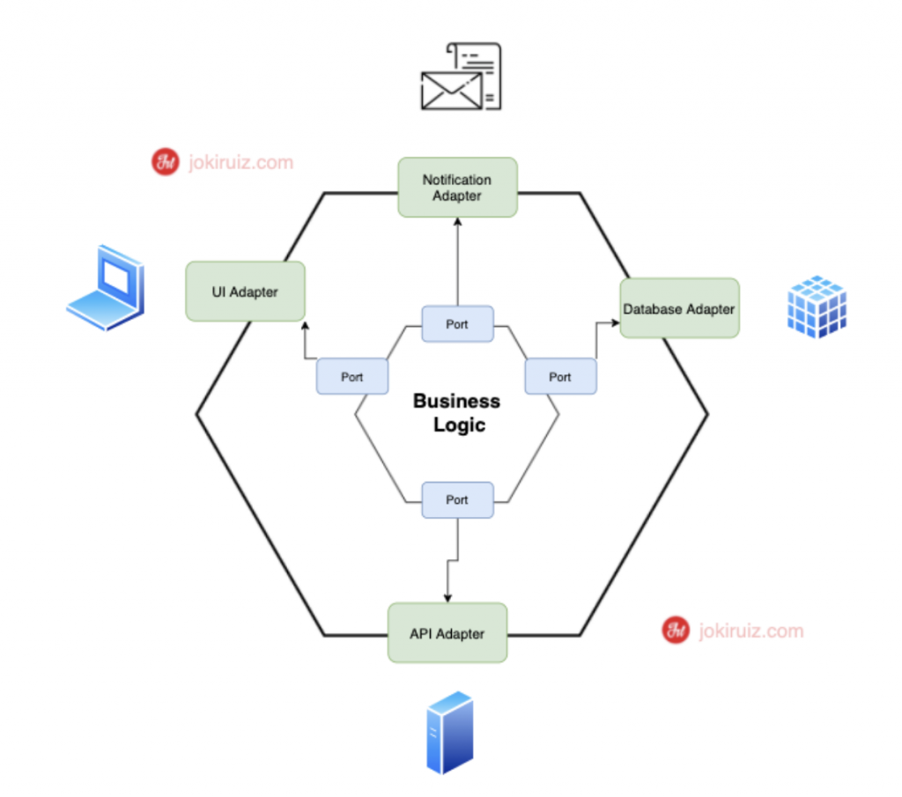

Hexagonal Architecture

The hexagonal architecture, also known as the Ports and Adapters pattern, promotes the separation of concerns in an application. It defines the core business logic (the hexagon) separately from the external interfaces (the ports and adapters) for interactions with the outside world.
Overview
Hexagonal architecture divides an application into different layers, making it easier to develop, maintain, and extend individual components independently. It enforces loose coupling between the core application logic and external systems, such as databases, user interfaces, or external services.
Benefits
- Modularity: Hexagonal architecture promotes a high degree of modularity in software, allowing individual components to be developed, maintained, and extended independently.
- Testability: It’s easier to write unit tests for the core business logic, as the external dependencies and interactions are abstracted behind ports and adapters. This leads to more reliable and maintainable software.
- Loose Coupling: The architecture enforces loose coupling between the core application logic and external systems, making it easier to change or replace components without affecting the entire application.
Tangible Things to Do for Adoption
- Implement Adapters:
- Develop adapters that connect your application to external systems or frameworks, such as databases, user interfaces, or external services.
- Ensure that these adapters implement the ports defined in the next step.
- Testing:
- Write unit tests for the core business logic using mock or stub implementations of the adapters.
- Ensure that the core logic can be tested in isolation from external dependencies.
- Data Flow:
- Define the flow of data between the core logic and the adapters.
- Clearly outline how data is passed in and out of the core logic through the defined ports.